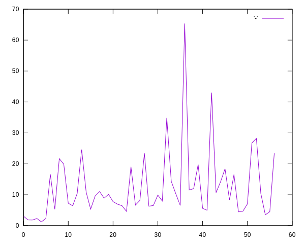

Tor playground
How to try new things with Tor
Let craft some tools
torcontrol script
This script is the one we use to send commands to Tor. It simply uses
netcat to authenticat and send a commadn to the control
port.
#!/usr/bin/env bash
CMD=${*}
PORT=${PORT-9051}
ADDRESS=${ADDRESS-127.0.0.1}
CMD_WITH_AUTH="AUTHENTICATE\r\n${CMD}\r\nQUIT"
echo -e $CMD_WITH_AUTH | nc $ADDRESS $PORT
Running Tor
In order to be able to interact with Tor by sending commands and
recieving feedback we need to enable the Tor Control Port so, start
Tor with the switcg --controlport. The port
number is not really important but 9051 is the one by
default so, lets use that one:
$ tor --controlport 9051You will see something like this:
Oct 07 15:45:22.010 [notice] Tor 0.4.7.8 running on Linux with Libevent 2.1.12-stable, OpenSSL 1.1.1q, Zlib 1.2.12, Liblzma 5.2.5, Libzstd 1.5.2 and Glibc 2.34 as libc.
Oct 07 15:45:22.010 [notice] Tor can't help you if you use it wrong! Learn how to be safe at https://support.torproject.org/faq/staying-anonymous/
Oct 07 15:45:22.010 [notice] Configuration file "/nix/store/qcg0bryrpl870kqnf9kf08cpqyi2vkps-tor-0.4.7.8/etc/tor/torrc" not present, using reasonable defaults.
Oct 07 15:45:22.011 [warn] ControlPort is open, but no authentication method has been configured. This means that any program on your computer can reconfigure your Tor. That's bad! You should upgrade your Tor controller as soon as possible.
Oct 07 15:45:22.011 [notice] Opening Socks listener on 127.0.0.1:9050
Oct 07 15:45:22.011 [notice] Opened Socks listener connection (ready) on 127.0.0.1:9050
Oct 07 15:45:22.011 [notice] Opening Control listener on 127.0.0.1:9051
Oct 07 15:45:22.011 [notice] Opened Control listener connection (ready) on 127.0.0.1:9051
Oct 07 15:45:22.000 [notice] Bootstrapped 0% (starting): Starting
Oct 07 15:45:22.000 [notice] Starting with guard context "default"
Oct 07 15:45:23.000 [notice] Bootstrapped 5% (conn): Connecting to a relay
Oct 07 15:45:23.000 [notice] Bootstrapped 10% (conn_done): Connected to a relay
Oct 07 15:45:24.000 [notice] Bootstrapped 14% (handshake): Handshaking with a relay
Oct 07 15:45:27.000 [notice] Bootstrapped 15% (handshake_done): Handshake with a relay done
Oct 07 15:45:27.000 [notice] Bootstrapped 75% (enough_dirinfo): Loaded enough directory info to build circuits
Oct 07 15:45:27.000 [notice] Bootstrapped 90% (ap_handshake_done): Handshake finished with a relay to build circuits
Oct 07 15:45:27.000 [notice] Bootstrapped 95% (circuit_create): Establishing a Tor circuit
Oct 07 15:45:28.000 [notice] Bootstrapped 100% (done): Done
Note that in this case we are not loading any configuration file and
that our
ControlPort is open, but no authentication method has been configured.
Sending commands
Now we can use torcontrol to send command. Let see how
many circuits we have:
$ ./torcontrol getinfo circuit-status250+circuit-status=
1 BUILT $8370FC4C190D0020FA594D8232DFE34B5B30AF05~McCormickRecipes,$3A04AC8969E55DF51C8D11C49ABF18A0CC847FC0~Unnamed,$CE863C22AD5ABBEAF606AE35A22781C409D895E5~mj4,$BBBBBAD453263D786EC34AB68A06214288910345~motor BUILD_FLAGS=IS_INTERNAL,NEED_CAPACITY PURPOSE=HS_CLIENT_HSDIR HS_STATE=HSCI_CONNECTING TIME_CREATED=2022-10-10T03:06:29.387430
2 EXTENDED $C366391E67A29CE959A15193D0CF2F9ED94F3578~jorcanada,$3A92CD579E36527C9AF7DB19ED7D41512E3069A6~ellen BUILD_FLAGS=NEED_CAPACITY PURPOSE=MEASURE_TIMEOUT TIME_CREATED=2022-10-10T03:06:30.386581
3 BUILT $C366391E67A29CE959A15193D0CF2F9ED94F3578~jorcanada,$9E627928DFE5DD5E518A452A503D40880115DFA1~UntilNoEnd,$6BCB964AB74E23F8986BDA905697D3A6BE08AF28~F3Netze BUILD_FLAGS=NEED_CAPACITY PURPOSE=GENERAL TIME_CREATED=2022-10-10T03:06:31.387425
4 BUILT $C366391E67A29CE959A15193D0CF2F9ED94F3578~jorcanada,$7C22E89AB620E77DF1B4A33787A5EC3F2AB4A8D1~ZKP1984,$BEB9510F725FC7C7C4A3B12AC5A1CFEC63F99614~fujiko BUILD_FLAGS=IS_INTERNAL,NEED_CAPACITY PURPOSE=HS_CLIENT_REND HS_STATE=HSCR_ESTABLISHED_IDLE REND_QUERY=wasabiukrxmkdgve5kynjztuovbg43uxcbcxn6y2okcrsg7gb6jdmbad TIME_CREATED=2022-10-10T03:06:32.389300 SOCKS_USERNAME="4754"
5 BUILT $8370FC4C190D0020FA594D8232DFE34B5B30AF05~McCormickRecipes,$7C22E89AB620E77DF1B4A33787A5EC3F2AB4A8D1~ZKP1984,$A9D52C4AA8556B49941EC796CBC94839F0DA54F5~DockerObfs4Bridge,$0947B12441F69611D7DF7FA94D9188F7AA2B79FF~TorHet3 BUILD_FLAGS=IS_INTERNAL,NEED_CAPACITY PURPOSE=HS_CLIENT_INTRO HS_STATE=HSCI_INTRO_SENT REND_QUERY=wasabiukrxmkdgve5kynjztuovbg43uxcbcxn6y2okcrsg7gb6jdmbad TIME_CREATED=2022-10-10T03:06:33.391021 SOCKS_USERNAME="4754"
6 BUILT $8370FC4C190D0020FA594D8232DFE34B5B30AF05~McCormickRecipes,$A3878C3E6ADE27735BFA4157BE884D8292FF7624~RelayLama,$DC7E7D9AB7AD52F03B856E6DC278E9D92BF19B33~s6tor2 BUILD_FLAGS=IS_INTERNAL,NEED_CAPACITY PURPOSE=HS_VANGUARDS TIME_CREATED=2022-10-10T03:06:34.392588
7 BUILT $C366391E67A29CE959A15193D0CF2F9ED94F3578~jorcanada,$A3878C3E6ADE27735BFA4157BE884D8292FF7624~RelayLama,$67F5AC35DBA20D22A0178BFB6F4AC076C3B16829~hubble BUILD_FLAGS=IS_INTERNAL,NEED_CAPACITY PURPOSE=HS_VANGUARDS TIME_CREATED=2022-10-10T03:06:35.398196
8 BUILT $C366391E67A29CE959A15193D0CF2F9ED94F3578~jorcanada,$0AE25E26120B6866F548A0FCCF087A1F76B2AD4D~tor7,$67CDF7A4D06E98E55AAE595BBEBF38E64C4CCBF3~khao BUILD_FLAGS=IS_INTERNAL,NEED_CAPACITY PURPOSE=HS_VANGUARDS TIME_CREATED=2022-10-10T03:06:36.403431
9 BUILT $C366391E67A29CE959A15193D0CF2F9ED94F3578~jorcanada,$0AE25E26120B6866F548A0FCCF087A1F76B2AD4D~tor7,$631CBDDAF9B6CAF4B4D69D1E72B35970499D95A4~eg9522alpha BUILD_FLAGS=IS_INTERNAL,NEED_CAPACITY PURPOSE=HS_VANGUARDS TIME_CREATED=2022-10-10T03:06:37.408147
10 EXTENDED $8370FC4C190D0020FA594D8232DFE34B5B30AF05~McCormickRecipes,$0AE25E26120B6866F548A0FCCF087A1F76B2AD4D~tor7 BUILD_FLAGS=IS_INTERNAL,NEED_CAPACITY PURPOSE=HS_VANGUARDS TIME_CREATED=2022-10-10T03:06:38.412651
11 EXTENDED $C366391E67A29CE959A15193D0CF2F9ED94F3578~jorcanada BUILD_FLAGS=NEED_CAPACITY PURPOSE=GENERAL TIME_CREATED=2022-10-10T03:06:39.410540
.
250 OK
250 closing connectionConfiguration
Query configs
$ ./torcontrol getinfo config/names | grep Circuit__DisablePredictedCircuits Boolean
CircuitBuildTimeout TimeInterval
CircuitPadding Boolean
CircuitPriorityHalflife Float
CircuitsAvailableTimeout TimeInterval
CircuitStreamTimeout TimeInterval
DoSCircuitCreationBurst Integer
DoSCircuitCreationDefenseTimePeriod TimeInterval
DoSCircuitCreationDefenseType SignedInteger
DoSCircuitCreationEnabled Boolean+Auto
DoSCircuitCreationMinConnections Integer
DoSCircuitCreationRate Integer
HiddenServiceExportCircuitID Dependent
HiddenServiceMaxStreamsCloseCircuit Dependent
LearnCircuitBuildTimeout Boolean
MaxCircuitDirtiness TimeInterval
MaxClientCircuitsPending Integer
NewCircuitPeriod TimeInterval
PathsNeededToBuildCircuits Float
ReducedCircuitPadding BooleanGet configuration
$ ./torcontrol getconf CircuitBuildTimeout
250 OK
250 CircuitBuildTimeout=0Set configuration
$ ./torcontrol setconf CircuitBuildTimeout=30
250 OK
$ ./torcontrol getconf CircuitBuildTimeout
250 OK
250 CircuitBuildTimeout=30Information
Get all the possible information available.
$ ./torcontrol getinfo info/names250+info/names=
accounting/bytes -- Number of bytes read/written so far in the accounting interval.
accounting/bytes-left -- Number of bytes left to write/read so far in the accounting interval.
accounting/enabled -- Is accounting currently enabled?
accounting/hibernating -- Are we hibernating or awake?
accounting/interval-end -- Time when the accounting period ends.
accounting/interval-start -- Time when the accounting period starts.
accounting/interval-wake -- Time to wake up in this accounting period.
address -- IP address of this Tor host, if we can guess it.
address-mappings/all -- Current address mappings.
address-mappings/cache -- Current cached DNS replies.
address-mappings/config -- Current address mappings from configuration.
address-mappings/control -- Current address mappings from controller.
address/v4 -- IPv4 address of this Tor host, if we can guess it.
address/v6 -- IPv6 address of this Tor host, if we can guess it.
bw-event-cache -- Cached BW events for a short interval.
circuit-status -- List of current circuits originating here.
config-can-saveconf -- Is it possible to save the configuration to the "torrc" file?
config-defaults-file -- Current location of the defaults file.
config-file -- Current location of the "torrc" file.
config-text -- Return the string that would be written by a saveconf command.
config/* -- Current configuration values.
config/defaults -- List of default values for configuration options. See also config/names
config/names -- List of configuration options, types, and documentation.
consensus/* -- Information about and from the ns consensus.
current-time/* -- Current time.
current-time/local -- Current time on the local system.
current-time/utc -- Current UTC time.
desc-annotations/id/* -- Router annotations by hexdigest.
desc/all-recent -- All non-expired, non-superseded router descriptors.
desc/download-enabled -- Do we try to download router descriptors?
desc/id/* -- Router descriptors by ID.
desc/name/* -- Router descriptors by nickname.
dir/server/* -- Router descriptors as retrieved from a DirPort.
dir/status-vote/current/consensus -- v3 Networkstatus consensus as retrieved from a DirPort.
dir/status-vote/current/consensus-microdesc -- v3 Microdescriptor consensus as retrieved from a DirPort.
dir/status/* -- v2 networkstatus docs as retrieved from a DirPort.
dormant -- Is Tor dormant (not building circuits because it's idle)?
downloads/bridge/* -- Download statuses for bridge descriptors, by bridge identity digest
downloads/bridge/<desc> -- Return a download status for a given bridge identity digest
downloads/bridge/bridges -- Return a list of configured bridge identity digests with download statuses
downloads/cert/* -- Download statuses for certificates, by id fingerprint and signing key
downloads/cert/fp/<fp> -- Download status for <fp> with the default signing key; corresponds to /fp/ URLs on directory server.
downloads/cert/fp/<fp>/<sk> -- Download status for <fp> with signing key <sk>; corresponds to /fp-sk/ URLs on directory server.
downloads/cert/fp/<fp>/sks -- List of signing keys for which specific download statuses are available for this id fingerprint
downloads/cert/fps -- List of authority fingerprints for which any download statuses exist
downloads/desc/* -- Download statuses for router descriptors, by descriptor digest
downloads/desc/<desc> -- Return a download status for a given descriptor digest
downloads/desc/descs -- Return a list of known router descriptor digests
downloads/networkstatus/* -- Download statuses for networkstatus objects
downloads/networkstatus/microdesc -- Download status for current-mode microdesc download
downloads/networkstatus/microdesc/bootstrap -- Download status for bootstrap-time microdesc download
downloads/networkstatus/microdesc/running -- Download status for run-time microdesc download
downloads/networkstatus/ns -- Download status for current-mode networkstatus download
downloads/networkstatus/ns/bootstrap -- Download status for bootstrap-time networkstatus download
downloads/networkstatus/ns/running -- Download status for run-time networkstatus download
entry-guards -- Which nodes are we using as entry guards?
events/names -- Events that the controller can ask for with SETEVENTS.
exit-policy/default -- The default value appended to the configured exit policy.
exit-policy/full -- The entire exit policy of onion router
exit-policy/ipv4 -- IPv4 parts of exit policy
exit-policy/ipv6 -- IPv6 parts of exit policy
exit-policy/reject-private/default -- The default rules appended to the configured exit policy by ExitPolicyRejectPrivate.
exit-policy/reject-private/relay -- The relay-specific rules appended to the configured exit policy by ExitPolicyRejectPrivate and/or ExitPolicyRejectLocalInterfaces.
extra-info/digest/* -- Extra-info documents by digest.
features/names -- What arguments can USEFEATURE take?
hs/client/desc/id* -- Hidden Service descriptor in client's cache by onion.
hs/service/desc/id/* -- Hidden Service descriptor in services's cache by onion.
info/names -- List of GETINFO options, types, and documentation.
ip-to-country/* -- Perform a GEOIP lookup
limits/max-mem-in-queues -- Actual limit on memory in queues
md/all -- All known microdescriptors.
md/download-enabled -- Do we try to download microdescriptors?
md/id/* -- Microdescriptors by ID
md/name/* -- Microdescriptors by name
net/listeners/* -- Bound addresses by type
network-liveness -- Current opinion on whether the network is live
network-status -- Brief summary of router status (v1 directory format)
ns/all -- Brief summary of router status (v2 directory format)
ns/id/* -- Brief summary of router status by ID (v2 directory format).
ns/name/* -- Brief summary of router status by nickname (v2 directory format).
ns/purpose/* -- Brief summary of router status by purpose (v2 directory format).
onions/current -- Onion services owned by the current control connection.
onions/detached -- Onion services detached from the control connection.
orconn-status -- A list of current OR connections.
process/descriptor-limit -- File descriptor limit.
process/pid -- Process id belonging to the main tor process.
process/uid -- User id running the tor process.
process/user -- Username under which the tor process is running.
signal/names -- Signal names recognized by the SIGNAL command
sr/current -- Get current shared random value.
sr/previous -- Get previous shared random value.
stats/ntor/* -- NTor circuit handshake stats.
stats/ntor/assigned -- Assigned NTor circuit handshake stats.
stats/ntor/requested -- Requested NTor circuit handshake stats.
stats/tap/* -- TAP circuit handshake stats.
stats/tap/assigned -- Assigned TAP circuit handshake stats.
stats/tap/requested -- Requested TAP circuit handshake stats.
status/bootstrap-phase -- The last bootstrap phase status event that Tor sent.
status/circuit-established -- Whether we think client functionality is working.
status/clients-seen -- Breakdown of client countries seen by a bridge.
status/enough-dir-info -- Whether we have enough up-to-date directory information to build circuits.
status/fresh-relay-descs -- A fresh relay/ei descriptor pair for Tor's current state. Not stored.
status/version/current -- Status of the current version.
status/version/recommended -- List of currently recommended versions.
stream-status -- List of current streams.
traffic/read -- Bytes read since the process was started.
traffic/written -- Bytes written since the process was started.
uptime -- Uptime of the Tor daemon in seconds.
version -- The current version of Tor.
.
250 OKGet Entry Guards
$ ./torcontrol getinfo entry-guards250+entry-guards=
$8370FC4C190D0020FA594D8232DFE34B5B30AF05~McCormickRecipes up
$ABBE4B4C1EF01B3C1765EFA0DEC113CA831946F2~Bergjuden unusable 2022-09-30 06:11:31
$A5C5ADC6CE9B52BE860D2572FF48569DC9E24C60~NTH104 unusable 2022-09-29 15:29:13
$C366391E67A29CE959A15193D0CF2F9ED94F3578~jorcanada up
$7D31D5118D47BF86C550ABB79EDDE865EC31B67F never-connected
$A9F7185499C5784E35B5C25744ED4AB75437CE5D~damita never-connected
$68F175CCABE727AA2D2309BCD8789499CEE36ED7~Pichincha never-connected
$E0B19869D08752BE030912C4145A8DB2829937C7 never-connected
$A2CD32D9D0668DB764AD68C745CE29693CA851B9~arbitraryTessa0 never-connected
$FDE1A5F7D1288F10FB3E95CE5A67DF2D560DFC54~marmotte up
$670C7517F8525E8C7879D6DD777A5B66475B8041~cyph21node3 never-connected
$EBB76D096FF5787A303B2C81E21BFF9816C6FA0D unusable 2022-10-07 06:34:42
$70C2204574A1B424F007938CF04A666216E1B3DD never-connected
$32EE911D968BE3E016ECA572BB1ED0A9EE43FC2F~ndnr1 never-connected
$AE95BDA37A5BB4685FEBB7F06649D6CE949B5316 never-connected
$B8123550BE6A39FF7EC2D015C86755517907557E~Unnamed never-connected
$8885EA6F74A694825B13B8A7080F6CF164DF74FB~Unnamed never-connected
$A6591D60F1411C02ADF9AAC8C41F49080DB336EB~AnotherGate never-connected
$DC7E7D9AB7AD52F03B856E6DC278E9D92BF19B33~s6tor2 never-connected
$C1BB67D3FBED68D4BAD400D1A49C5B79ECE3965E~pros2 never-connected
$3DB72310F6999555E71A09C3FCDF86E8E99118F7~hKnYTKYgoYx4JmnAwu9 never-connected
$8B889E04C60E30D511013189D3C2ADCE522E1F3C~bobtail never-connected
$12482DC3A5500416E8738D1987A80B94B943D4EF never-connected
$CB82FEC4156AE061260C4424CF1937BBFED34D6F~presidents2 never-connected
$F50755D5018C23F6CD115F23C95CCB2DC8B608B1~Hypervistor never-connected
$E84266018D89F4F7A2BB2BCA1C5B83ED3126B5BF~dominate never-connected
$BF0FB582E37F738CD33C3651125F2772705BB8E8~quadhead never-connected
$6C620C35C0EA16657960882DE88B28968EBC8689~Cerberus never-connected
$2717355D1ED1C421E3F8930F721BF2FDABA35CDA~0xdeadbeef never-connected
$FB8DAEA4AA0B845D518423753C6E125167BAAC64~Small never-connected
$4856C97DC4F2271BC896DF9CABD217EE2D869D68~mordoc never-connected
$0F6CBFB9E5CDFC5A6D427320E90B1DF91095DD67~bauruine never-connected
$7F302F0AACC76835768AF068849CA07D1CC38C5E~OceanGhost never-connected
$9C4FC85B99F6BCED78C0F7083D7E711AE6808D6A never-connected
.
250 OK
List Exit Nodes (and bandwidth)
$ ./torcontrol getinfo ns/all | grep -B1 -A1 'Exit.*Fast.*Running.*Stable.*Valid' | head -100r CalyxInstitute14 ABG9JIWtRdmE7EFZyI/AZuXjMA4 Qs0yOymbVs6GgnbYYduADsxleU4 2022-10-10 01:41:02 162.247.74.201 443 0
s Exit Fast Guard Running Stable V2Dir Valid
w Bandwidth=25000
--
a [2a03:e600:100::73]:8080
s Exit Fast Guard HSDir Running Stable V2Dir Valid
w Bandwidth=7500
--
a [2620:7:6001::103]:80
s Exit Fast Guard HSDir Running Stable V2Dir Valid
w Bandwidth=4000
--
r 0x616e6f6e AJhfcQByeAxQ5ZEWsDKLjSoIU3g D3apisz+27GWQ+gfzd/KPONdwts 2022-10-09 12:33:11 79.110.62.244 443 0
s Exit Fast Guard HSDir Running Stable V2Dir Valid
w Bandwidth=14000You can also use the Tor descriptor parser to play with this (it was created to extrac exit nodes)
$ ./torcontrol getinfo ns/all | dotnet fsi parsedesc.fsx| nickname | fingerprint | ip address | flags | meta |
|---|---|---|---|---|
| ohhiMarc | 6X9YwG56pxdfm+KjxwgyXAP7L7E | 103.251.167.21 | Exit,Fast,Running,Stable,Valid | [Bandwidth, 190000] |
| EFlat | ZtuDEYUFZT5xEMRSDfFDtbc2WK4 | 51.195.166.195 | Exit,Fast,HSDir,Running,Stable,V2Dir,Valid | [Bandwidth, 140000] |
| FileDitchExit0 | 7ROQfjvSkB1t+yA2gFZA6joz2Xo | 193.142.146.213 | Exit,Fast,Guard,HSDir,Running,Stable,V2Dir,Valid | [Bandwidth, 130000] |
| hrushevsky | 7Rq5UpqNlp3LCIAkgAWNk0gfGiI | 185.246.188.67 | Exit,Fast,Guard,HSDir,Running,Stable,V2Dir,Valid | [Bandwidth, 120000] |
| assange710703 | oR7nRxkc9IjreywSlSYPziYkvW0 | 95.214.55.43 | Exit,Fast,Guard,HSDir,Running,Stable,V2Dir,Valid | [Bandwidth, 110000] |
| Hydra92 | /qp8gC29Z3jVMcXLzfsuW+hLoss | 45.141.215.92 | Exit,Fast,Guard,HSDir,Running,Stable,V2Dir,Valid | [Bandwidth, 100000] |
| Charybdis | y/Wexbn9EICSrpFJ79rkH4gtpmk | 92.205.129.7 | Exit,Fast,Running,Stable,V2Dir,Valid | [Bandwidth, 95000] |
| OnMyMomma | Zp84sFmCUOJeIhvD9meC6NXmaa4 | 45.139.122.241 | Exit,Fast,Guard,HSDir,Running,Stable,V2Dir,Valid | [Bandwidth, 91000] |
Circuits
Create circuits with socks
Create new circuit with socks connection
$ curl --socks5-hostname me@localhost:9050 https://api.ipify.org/It creates a new circuit (because there isn’t any available) and we can check it:
$ ./torcontrol getinfo circuit-status 250-circuit-status=12 BUILT
13 BUILT $C366391E67A29CE959A15193D0CF2F9ED94F3578~jorcanada,$E821FCDD4773C30F5A1526E11C52F960B5E56FA8~b0rked02,$A93C0A08A9F39D48C613A497246AB321F44A7539~Ullr BUILD_FLAGS=NEED_CAPACITY PURPOSE=GENERAL TIME_CREATED=2022-10-04T17:45:14.138866 SOCKS_USERNAME="me"
250 OKCreate many circuits
Creating many circuits
$ curl --socks5-hostname me@localhost:9050 https://api.ipify.org/
83.137.158.9⏎
$ curl --socks5-hostname alice@localhost:9050 https://api.ipify.org/
185.220.101.179⏎
$ curl --socks5-hostname bob@localhost:9050 https://api.ipify.org/
62.102.148.69⏎
$ curl --socks5-hostname satoshi@localhost:9050 https://api.ipify.org/
185.220.101.167⏎
$ curl --socks5-hostname carol@localhost:9050 https://api.ipify.org/Result:
$ ./torcontrol getinfo circuit-status 250+circuit-status=
18 BUILT $6A7551EEE18F78A9813096E82BF84F740D32B911~TorMachine,$3AD2BAB085E520BBFB05DA5131327A4944D6FEC2~strypsteen,$6B612712814AED2F1C307DD0E87D2CCF5C3DE4D4~relayon1167 BUILD_FLAGS=NEED_CAPACITY PURPOSE=GENERAL TIME_CREATED=2022-10-04T17:57:18.534888 SOCKS_USERNAME="satoshi"
13 BUILT $C366391E67A29CE959A15193D0CF2F9ED94F3578~jorcanada,$E821FCDD4773C30F5A1526E11C52F960B5E56FA8~b0rked02,$A93C0A08A9F39D48C613A497246AB321F44A7539~Ullr BUILD_FLAGS=NEED_CAPACITY PURPOSE=GENERAL TIME_CREATED=2022-10-04T17:45:14.138866 SOCKS_USERNAME="me"
14 BUILT $8370FC4C190D0020FA594D8232DFE34B5B30AF05~McCormickRecipes,$FE5BE446A2C94AECA82CBB436367EE80FD615CA1~HandStanderd,$4F56DE76CDC2A296B6D637949207F904E5A20C21~relayon0179 BUILD_FLAGS=NEED_CAPACITY PURPOSE=GENERAL TIME_CREATED=2022-10-04T17:47:04.084523 SOCKS_USERNAME="alice"
15 BUILT $4A59FD3642C4D9F46A8D916AC9BC64390BCBC6AE~Labell,$6F757447E4F27551E59233D0EC076D727BFE5A2C~Demonsys,$D729C688382CC2A576089716BE10490D2D66FCE4~weizenbaum3 BUILD_FLAGS=NEED_CAPACITY PURPOSE=GENERAL TIME_CREATED=2022-10-04T17:56:25.368305 SOCKS_USERNAME="bob"
19 BUILT $EDCB30654D057404A3AA4EF55AF6DB505193BAD8~digineo4,$074B20C33D4A03453FB19A8535CDCE1352658A56~Unnamed,$60FE782DF923698546023C6F14FEC0884624F35C~artikel10ber17 BUILD_FLAGS=NEED_CAPACITY PURPOSE=GENERAL TIME_CREATED=2022-10-04T17:59:01.222555 SOCKS_USERNAME="carol"
.
250 OKUse specific Exit Node
Let’s use onionDAOrel0aded1
./torcontrol> setconf ExitNodes=5.2.79.190 Now, lets close all circuits and recreated them:
$ curl --socks5-hostname me@localhost:9050 https://api.ipify.org/
5.2.79.190⏎
$ curl --socks5-hostname alice@localhost:9050 https://api.ipify.org/
5.2.79.190⏎
$ curl --socks5-hostname bob@localhost:9050 https://api.ipify.org/
5.2.79.190⏎
$ curl --socks5-hostname carol@localhost:9050 https://api.ipify.org/
5.2.79.190⏎All the IPs are the same because all the circuits share the same exit node:
$ ./torcontrol getinfo circuit-status250+circuit-status=
21 BUILT $2AA5F598F9A1812F01CD99E3B59BB87362ED7438~setsun,$E7467371A0C061A64A9AF943F530F253D54333EB~ForPrivacyNET,$02A8CCB1FB70984226231283596DA734A80E3F6F~onionDAOrel0aded1 BUILD_FLAGS=NEED_CAPACITY PURPOSE=GENERAL TIME_CREATED=2022-10-04T18:15:48.340824 SOCKS_USERNAME="me"
23 BUILT $BFC4044119080D8BEE70218978EE83C3FC16AE7A~antifaang,$D34BE271B84630D5E08D0407419CDEBD2C931118~mevPLicebeer10b,$02A8CCB1FB70984226231283596DA734A80E3F6F~onionDAOrel0aded1 BUILD_FLAGS=NEED_CAPACITY PURPOSE=GENERAL TIME_CREATED=2022-10-04T18:16:10.648800 SOCKS_USERNAME="alice"
24 BUILT $98B4923BC636BF2111C100F6932EE33A0B937EB2~VTITor4,$F39B2BE0F0B9DCFD3D43AAA12D6BE16B14B13A79~Dingle,$02A8CCB1FB70984226231283596DA734A80E3F6F~onionDAOrel0aded1 BUILD_FLAGS=NEED_CAPACITY PURPOSE=GENERAL TIME_CREATED=2022-10-04T18:16:29.881947 SOCKS_USERNAME="bob"
25 BUILT $1FB9CCBE02CF10978EAB16943973AC5C548FA243~PeachUnknown,$5B1F0DAF378A1FAFCFD5FA9CDC66D1023DC0276E~fastlane,$02A8CCB1FB70984226231283596DA734A80E3F6F~onionDAOrel0aded1 BUILD_FLAGS=NEED_CAPACITY PURPOSE=GENERAL TIME_CREATED=2022-10-04T18:16:53.790657 SOCKS_USERNAME="carol"
.
250 OK
Close circuits
./torcontrol> closecircuit 13
./torcontrol> closecircuit 14
./torcontrol> closecircuit 15
./torcontrol> closecircuit 18
./torcontrol> closecircuit 19Mesuring times
for run in {1..100}; do \time -f "%e" curl -silent --socks5-hostname $run@localhost:9050 http://wasabiukrxmkdgve5kynjztuovbg43uxcbcxn6y2okcrsg7gb6jdmbad.onion/wabisabi/human-monitor > /dev/null; done